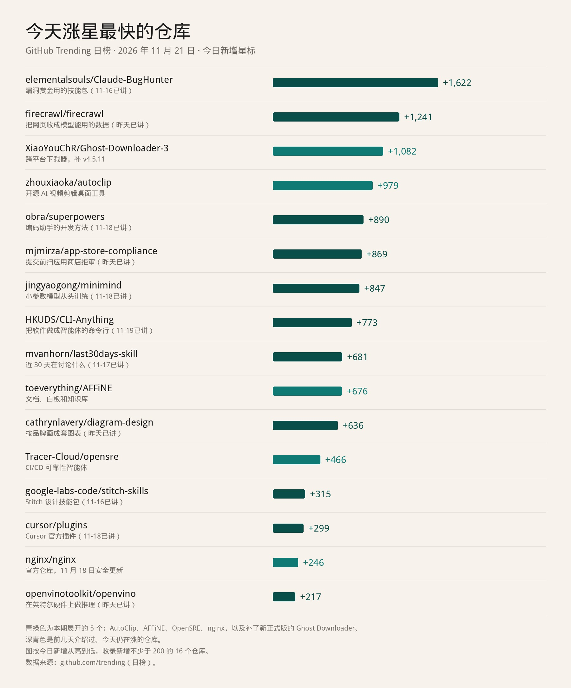
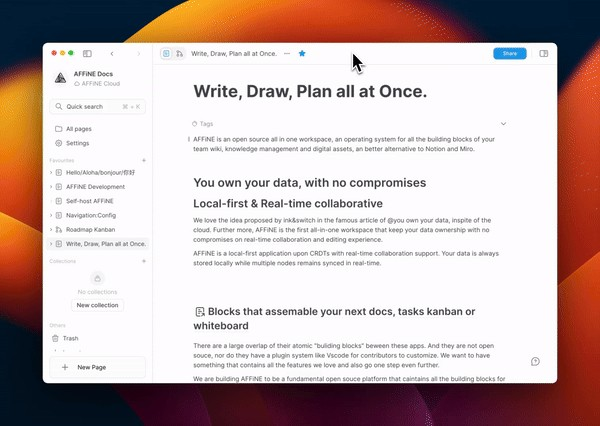
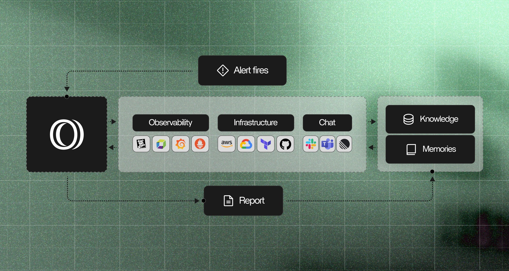
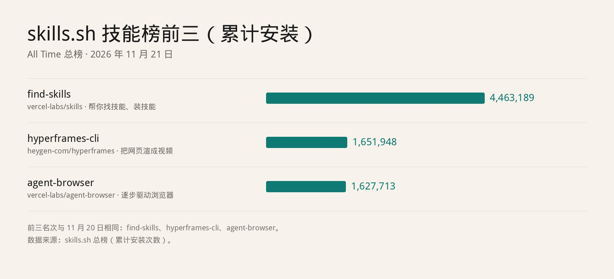

日榜上，前几天讲过的项目今天还在涨。新增最多的是 11 月 16 日讲过的 Claude-BugHunter，涨了 1,622 颗星，总星数 14,284。昨天的日榜上是 1,349 颗，总星数 12,550，讲它的那天日榜上是 98 颗。昨天讲过的 Firecrawl 涨了 1,241 颗星，总星数 205,276。昨天是 825 颗，总星数 204,241。昨天讲过的 Ghost Downloader 涨了 1,082 颗星，总星数 13,710。昨天是 341 颗，总星数 12,734。11 月 18 日讲过的 Superpowers 涨了 890 颗星，总星数 322,846。昨天是 2,028 颗，总星数 322,088。11 月 18 日讲它的时候日榜上是 1,917 颗，总星数 319,339，11 月 19 日是 822 颗。昨天讲过的 app-store-compliance 涨了 869 颗星，总星数 2,749。昨天是 377 颗，总星数 1,853。11 月 18 日讲过的 MiniMind 涨了 847 颗星，总星数 67,691。昨天是 238 颗，总星数 66,878。11 月 19 日讲过的 CLI-Anything 涨了 773 颗星，总星数 61,386。昨天是 898 颗，总星数 60,572。讲它的那天是 389 颗，总星数 59,749。11 月 17 日讲过的 last30days 涨了 681 颗星，总星数 71,453。讲它的时候日榜上是 135 颗，总星数 68,133。11 月 19 日是 1,059 颗，昨天是 954 颗，总星数 70,805。昨天讲过的 diagram-design 涨了 636 颗星，总星数 69,285。昨天是 271 颗，总星数 68,637。11 月 16 日讲过的 Stitch 技能包涨了 315 颗星，总星数 11,038。昨天是 302 颗，总星数 10,722。11 月 18 日讲过的 cursor/plugins 涨了 299 颗星，总星数 17,849。昨天是 384 颗，总星数 17,566。昨天讲过的 OpenVINO 涨了 217 颗星，总星数 11,790。昨天是 246 颗，总星数 11,568。这些仓库今天不再从头讲。Ghost Downloader 昨天写到的最新正式版，11 月 20 日又发了一版，放在最后。
今天单独写四个还没讲过的：把长视频剪成短视频的 AutoClip，涨了 979 颗星；把文档和白板放在一起的 AFFiNE，涨了 676 颗星；看 CI 为什么红、再把修复推上来给你审的 OpenSRE，涨了 466 颗星；官方 NGINX 开源仓库，涨了 246 颗星。

GitHub Trending 日榜，按今日新增星标从高到低，收录今日新增不少于 200 的 16 个仓库。青绿色为本期展开的 5 个：AutoClip、AFFiNE、OpenSRE、nginx，以及补了新正式版的 Ghost Downloader。深青色是前几天介绍过、今天仍在涨的仓库。数据来源：https://github.com/trending?since=daily
zhouxiaoka/autoclip 今天涨了 979 颗星，总星数 12,189。主要语言是 Python。许可证是 MIT。网站在 zhouxiaoka.github.io/autoclip_intro。仓库描述是：一个链接，一键出片。它把播客、访谈、课程这类长视频剪成短视频，带上字幕、封面和发布文案，面向抖音、小红书、TikTok、Reels、YouTube Shorts，也有 B 站和 YouTube 的横版。
剪辑、取景和渲染在你自己的电脑上完成。分析模型自己选。用云端分析，会把相关字幕和文案发出去；做画面理解或用参考帧生图，会发出抽样画面；用云端转写，会把音频发出去。本地分析和本地转写不走对应的云端 API。成片只有你选择投稿之后，才上传到已经连接的平台。匿名统计和错误报告可以在设置里关掉。细节在仓库的隐私说明里。
软件免费。云端分析、转写和 AI 生图按你选的服务商计费，用你自己的密钥。仓库没有一份官方订阅价目。自动设计封面默认不调用付费生图。Ollama 或 LM Studio 做本地分析，不需要云端密钥，机器要带得动模型。README 里有一份开发期的耗时记录，三条素材各不相同，文字模型费用按当时的 qwen-plus 估算，不含云端转写和生图，账单以服务商为准。
桌面版有两种安装包，都自带 Python 和 FFmpeg。macOS 是 Apple Silicon 的 dmg，Windows 10 和 11 是 x64 的安装程序。macOS 15 及以上若被拦截，到系统设置里仍要打开。Windows 安装包未签名，SmartScreen 会拦一下。Intel Mac 和 Linux 没有桌面安装包，用 Docker 或命令行。Docker 是把仓库拉下来，docker compose up -d --build，网页在本机 3000 端口。命令行要 Python 3.10 及以上，建议 3.11，并且 PATH 里有 FFmpeg 和 FFprobe。也可以 uvx autoclip-mcp，或 npx skills add zhouxiaoka/autoclip。
首页没有项目时，可以点「用示例项目看看效果」，示例在安装包里，不需要 API Key。没有字幕的视频，第一次装本地转写大约要下 220 MB。装不上或太慢，设置里可以改用百炼的云端转写。README 写这个大约 0.1 元一小时音频，音频会上传，价钱以阿里云账单为准。
AutoClip 仓库 docs/images/home-v1.4.0.png 中的首页。文件名对应 1.4.0 时期的界面，最新正式版是 v1.5.8。来源：https://github.com/zhouxiaoka/autoclip/blob/main/docs/images/home-v1.4.0.png
最新打了标签、且没有标成预发布的正式版是 v1.5.8，11 月 2 日发布。v1.5.1、v1.5.2、v1.5.3 标了预发布。更新日志里的 1.5.8 写，这一版主要让出片更稳。新功能是密钥引导：从剪贴板认出密钥，或用中转站准备的链接，确认之后才写入。单次制作有时间上限，默认 20 分钟，到点停下，可以重试。本地语音转写不计入这 20 分钟。
toeverything/AFFiNE 今天涨了 676 颗星，总星数 75,801。主要语言是 TypeScript。网站在 affine.pro，文档在 docs.affine.pro。读音仓库写的是 [əˈfain]。它把自己放在 Notion 和 Miro 旁边：文档、白板和数据库放在同一块画布上，本地优先，也可以实时协作。客户端有 macOS、Windows、Linux、iOS、Android，也有网页。
许可证以仓库 LICENSE 为准，整仓不能按一份 MIT 来用。根目录 LICENSE 写了三块。packages/backend 和 packages/common/native 走 packages/backend/server/LICENSE，标题是 AFFiNE Enterprise Edition 许可。生产环境要使用这两处代码，得遵守 AFFiNE 的订阅条款，并且持有席位数正确的企业版订阅。 开发和测试可以不订订阅来复制、修改。修改和补丁的权利仍归 AFFiNE 及其许可方，拿去用同样要有企业版订阅。除此之外，禁止复制、合并、发布、分发、再许可和出售。这份企业版许可只管没有作为社区版分发出去的那一部分。作为社区版分发的，以及在客户端下发的图片、字体、CSS 和客户端 JavaScript，这份文件写的是 MPL-2.0。上面两个目录以外的内容，根 LICENSE 写明按 MIT，全文在 LICENSE-MIT。第三方组件沿用原来的许可证。定价页对 v0.27.4 的说明，和这个划分一致。
README 的 License 一节仍写，社区版是现在能用的版本，自托管按 MIT，企业版还没发布。安装和商用以仓库 LICENSE 为准。
自托管文档推荐 Docker Compose v2。镜像是 ghcr.io/toeverything/affine:stable，默认端口 3010。旁边要 PostgreSQL 和 Redis，缺了 Redis 起不来。文档写服务器安装大约 1.5 GB，建议至少 4 核；基本使用 2 GB 内存，文档超过一万字准备 4 GB。测过的数据库是 Postgres 16，要用 AI 的完整能力还要 pgvector。Redis 要 6 或 7。从 0.27 起，0.27 的客户端只连 0.27 及以上的服务器，0.27 的服务器只接受 0.26 及以上的客户端。服务器配置改到 config.json，环境变量不再是首选。
最新没有标成预发布的正式版是 v0.27.4，8 月 18 日发布。之后的标签是按日的 canary，或 0.27.5-beta.3 这种 beta，都标了预发布。
定价在 affine.pro/pricing。云的免费档没有使用期限：本地工作区不限；云存储 10 GB，单文件最大 10 MB，每个工作区最多 3 人，版本历史 7 天，最多 3 台设备登录。Pro 在定价页上是每月 6.75 美元，云存储 100 GB，单文件 100 MB，最多 10 人，版本历史 30 天。Team 是每席每月 10 美元。AI 是单独加购，按年付时每月 8.9 美元。另有一次付清的 Believer，499.99 美元，个人 Pro 终身，云存储 1 TB。企业和源码商业许可是另议。自托管的条款随版本和组件走，定价页写开源组件不要求企业版订阅，企业版那部分要按上面的许可。

AFFiNE 官方 README 中的文档界面。来源：https://github.com/toeverything/AFFiNE
Tracer-Cloud/opensre 今天涨了 466 颗星，总星数 13,614。主要语言是 Python。许可证是 Apache-2.0。网站在 opensre.com，文档在 opensre.com/docs。仓库描述是 The open-source agent for CI/CD reliability。README 的原话是：CI 告诉你它坏了，但不告诉你为什么，也不告诉你怎么修。它是一个命令行智能体，读失败的那次运行，顺着原因查，再把修复推上来给你审。可以放在你自己的机器上，用你自己的模型。
README 顶部标着 Public Alpha。核心流程可以拿来试，还没有完全稳定，接口和集成还会变。
macOS 和 Linux 的安装是一条 curl，打到 install.opensre.com。要装这个打了标签的版本，发行说明写的是带上 --release --version 0.1.2026.11.21。README 首页那条用的是 -gh，取的是 main 上的最新构建。装好之后运行 opensre。Linux 预编译包要 glibc 2.35 及以上。这一版的发行说明让 Windows 走 WSL。README 和快速开始另给了一条 PowerShell 安装命令。一般不用 sudo。
交互式的壳要先登录。登录之后打开的是官方托管的模型，这时不用自己的模型密钥。快速开始写，GitHub 还没接上时，壳不会进到提问；缺了这个连接而被拒绝的请求不扣额度。在服务器或 SSH 上，浏览器交不回登录，改成粘贴一次性验证码，五分钟有效。自建网关或容器时，要自己选模型供应商并填写密钥。README 列了 Anthropic、OpenAI、Ollama、Gemini、Bedrock 等。可选地，在把内容发给外部模型之前遮住敏感标识。它能把修复推到 PR 分支上给你审，补救动作是可选的。
README 写能接到 60 多种工具，表里有 Grafana、Datadog、Kubernetes、GitHub、PagerDuty、Slack。第一次进壳，可以让它自动照看 GitHub Actions，或先出一份仓库近 30 天的 CI 报告。
仓库和文档没有标软件售价。产品分析和 Sentry 错误上报默认开着，可以关掉：OPENSRE_NO_TELEMETRY=1。

OpenSRE 官方 README 中的工作流程。来源：https://github.com/Tracer-Cloud/opensre
最新没有标成预发布的标签是 v0.1.2026.11.21，11 月 21 日发布。仓库几乎每天打一个这种日期标签。这一版的发行说明在「相对前一天」下面没有列出变更。
nginx/nginx 今天涨了 246 颗星，总星数 32,567。主要语言是 C。这是官方的 NGINX 开源仓库，主页在 nginx.org。README 的定义是：Web 服务器、高性能负载均衡、反向代理、API 网关和内容缓存。
许可证是 BSD 2-Clause。版权声明是 2002 到 2021 年 Igor Sysoev，以及 2011 到 2026 年 Nginx, Inc.。再分发源码或二进制时，保留版权声明、条件和免责声明。企业发行版、商业支持和培训在 F5。这个仓库本身是开源的，README 没有标价。
它出现在今天的日榜上，由头在 11 月 18 日。nginx.org 的新闻写，稳定版 nginx-1.30.7 和主线版 nginx-1.31.9 一起发布，带了一批漏洞修复。GitHub 上对应的标签是 release-1.30.7 和 release-1.31.9，都没有标成预发布，发布时间是 11 月 18 日。社区博客在 11 月 19 日写了 1.31.9 的行为变化。不是今天才发的版本。
两份 CHANGES 都写到的修复包括：try_files 配 alias 时 worker 里可能溢出（CVE-2026-125283）；HTTP/2 流控窗口溢出，可能导致段错误（CVE-2026-123007）；worker_connections 不够时，HTTP/2 和 HTTP/3 可能 use-after-free（CVE-2026-123633、CVE-2026-121810）；用了 resolver，同一个名字在子请求里同时解析，可能 use-after-free（CVE-2026-123634）；邮件代理里的 use-after-free（CVE-2026-113425）；stream 模块里，同步完成 SSL 握手的人可能让客户端证书按默认服务器而不是 SNI 选中的虚拟服务器来校验（CVE-2026-120967）；stream 的 ssl_preread 对畸形 ClientHello 的理解和别的 TLS 实现不一致（CVE-2026-123640）；经 SSL 读请求体时 worker 可能死循环（CVE-2026-118899）。
1.31.9 的 CHANGES 另有一条：用 PROXY protocol 第 2 版并且动态加载 SSL 证书时，worker 可能段错误（CVE-2026-120993）。1.30.7 的 CHANGES 里没有这一条。1.31.9 还有两处行为变化：没有冒号的头字段行现在会被拒绝；分块请求体里框架开销太多，请求会被拒绝。官方博客写，没有冒号的头字段以前会当成空头传下去，现在请求得到 400，上游响应里出现这种行时客户端得到 502。博客还提醒，initgroups() 失败时 worker 会退出。稳定版要更新，看 1.30.7。已经在主线上的，看 1.31.9，升级前对一下这两处变化。
二进制包和源码在 nginx.org/en/download.html。README 建议用官方包，或用这个仓库的源码来编译。发行版里自带的社区包往往更旧，安全补丁也更慢。
XiaoYouChR/Ghost-Downloader-3 昨天已经写过。它做什么、GPL-3.0，以及 Windows、macOS、Linux、Android 的平台要求，都在昨天那篇里。昨天写的最新正式版是 v4.5.10，11 月 19 日发布。
11 月 20 日又发了 v4.5.11，没有标成预发布。发行说明写，加上了德语、法语、印尼语、意大利语和韩语。修了 Windows 任务栏不支持显示进度时，每一秒报一次错的问题。作者仍写，因为学业，往后更新不会那么勤。
skills.sh 总榜按累计安装次数排。前三名没变，还是 find-skills、hyperframes-cli、agent-browser。

skills.sh All Time 总榜前三，按累计安装次数。名次与 11 月 20 日相同，仍是 find-skills、hyperframes-cli、agent-browser。数据来源：https://skills.sh/
第一名 find-skills，累计 4,463,189 次，来自 vercel-labs/skills，帮你在技能库里搜索并安装。昨天是 4,448,225 次。第二名 hyperframes-cli，累计 1,651,948 次，来自 heygen-com/hyperframes，教 AI 用 HeyGen 的 HyperFrames 把网页和素材渲成视频。昨天是 1,639,086 次。第三名 agent-browser，累计 1,627,713 次，昨天是 1,611,923 次。11 月 18 日已经展开讲过，今天不单写。它给智能体一套可以逐步驱动的浏览器命令行。
第二名比第三名多 24,235 次。昨天这个差距是 27,163 次，略缩。第四名是 hyperframes，累计 1,617,209 次。第五名 grill-me，累计 1,585,538 次。agent-browser 比 grill-me 多 42,175 次，昨天这个差距是 31,701 次，拉开了。
第一，AutoClip 今天涨了 979 颗星，总星数 12,189。许可证 MIT。软件免费，剪辑和渲染在本机，云端模型按服务商计费。最新正式版 v1.5.8。桌面安装包是 Apple Silicon 和 Windows x64。
第二，AFFiNE 今天涨了 676 颗星，总星数 75,801。backend 和 native 的生产使用要有企业版订阅，其余按根 LICENSE 是 MIT，社区版和客户端部分按 MPL-2.0。最新正式版标签是 v0.27.4。云免费档 10 GB。nginx 官方仓库今天涨了 246 颗星，许可证 BSD 2-Clause。11 月 18 日发了稳定版 1.30.7 和主线版 1.31.9。
第三，技能榜前三没变，第二名比第三名多 24,235 次。OpenSRE 今天涨了 466 颗星，许可证 Apache-2.0，README 标着 Public Alpha。Ghost Downloader 的新正式版是 v4.5.11，加了五种语言。
开源项目更新很快。真要装之前，打开它的 GitHub 页面，看一眼最新的 README。
来源清单：
https://github.com/trending?since=daily
https://github.com/elementalsouls/Claude-BugHunter
https://github.com/firecrawl/firecrawl
https://github.com/XiaoYouChR/Ghost-Downloader-3
https://github.com/XiaoYouChR/Ghost-Downloader-3/releases/tag/v4.5.11
https://github.com/XiaoYouChR/Ghost-Downloader-3/releases/tag/v4.5.10
https://github.com/obra/superpowers
https://github.com/mjmirza/app-store-compliance
https://github.com/jingyaogong/minimind
https://github.com/HKUDS/CLI-Anything
https://github.com/mvanhorn/last30days-skill
https://github.com/cathrynlavery/diagram-design
https://github.com/google-labs-code/stitch-skills
https://github.com/cursor/plugins
https://github.com/openvinotoolkit/openvino
https://github.com/zhouxiaoka/autoclip
https://github.com/zhouxiaoka/autoclip/blob/main/LICENSE
https://github.com/zhouxiaoka/autoclip/blob/main/docs/PRIVACY.md
https://github.com/zhouxiaoka/autoclip/blob/main/docs/USER_INSTALLATION_GUIDE.md
https://github.com/zhouxiaoka/autoclip/blob/main/CHANGELOG.md
https://github.com/zhouxiaoka/autoclip/blob/main/docs/images/home-v1.4.0.png
https://github.com/zhouxiaoka/autoclip/releases/tag/v1.5.8
https://zhouxiaoka.github.io/autoclip_intro/
https://github.com/toeverything/AFFiNE
https://github.com/toeverything/AFFiNE/blob/v0.27.4/LICENSE
https://github.com/toeverything/AFFiNE/blob/v0.27.4/LICENSE-MIT
https://github.com/toeverything/AFFiNE/blob/v0.27.4/packages/backend/server/LICENSE
https://affine.pro
https://affine.pro/pricing
https://affine.pro/terms/#subscription
https://docs.affine.pro
https://docs.affine.pro/self-host-affine
https://docs.affine.pro/self-host-affine/install/requirements
https://docs.affine.pro/self-host-affine/install/docker-compose-recommended
https://docs.affine.pro/self-host-affine/install/configuration
https://github.com/toeverything/AFFiNE/releases/tag/v0.27.4
https://github.com/Tracer-Cloud/opensre
https://github.com/Tracer-Cloud/opensre/blob/main/LICENSE
https://opensre.com
https://www.opensre.com/docs
https://www.opensre.com/docs/getting-started/quickstart
https://www.opensre.com/docs/install/install-local
https://www.opensre.com/docs/install/windows-local
https://github.com/Tracer-Cloud/opensre/releases/tag/v0.1.2026.11.21
https://github.com/nginx/nginx
https://github.com/nginx/nginx/blob/master/LICENSE
https://nginx.org/
https://nginx.org/news.html
https://nginx.org/en/CHANGES
https://nginx.org/en/CHANGES-1.30
https://nginx.org/en/download.html
https://nginx.org/en/linux_packages.html
https://nginx.org/en/docs/
https://github.com/nginx/nginx/releases/tag/release-1.30.7
https://github.com/nginx/nginx/releases/tag/release-1.31.9
https://blog.nginx.org/blog/nginx-1-31-9-stricter-header-parsing-flood-detection-for-chunked-request-bodies-and-protocol-fixes-for-http-2-and-http-3
https://skills.sh/
https://skills.sh/api/skills/all-time/0
https://skills.sh/vercel-labs/skills/find-skills
https://skills.sh/heygen-com/hyperframes/hyperframes-cli
https://skills.sh/vercel-labs/agent-browser/agent-browser
https://skills.sh/heygen-com/hyperframes/hyperframes
https://skills.sh/mattpocock/skills/grill-me